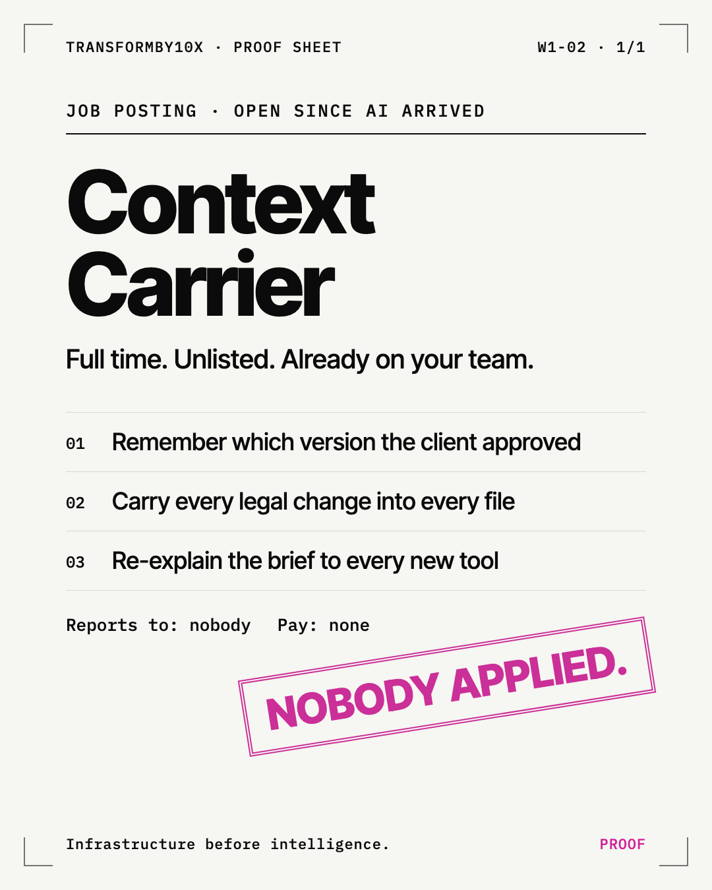
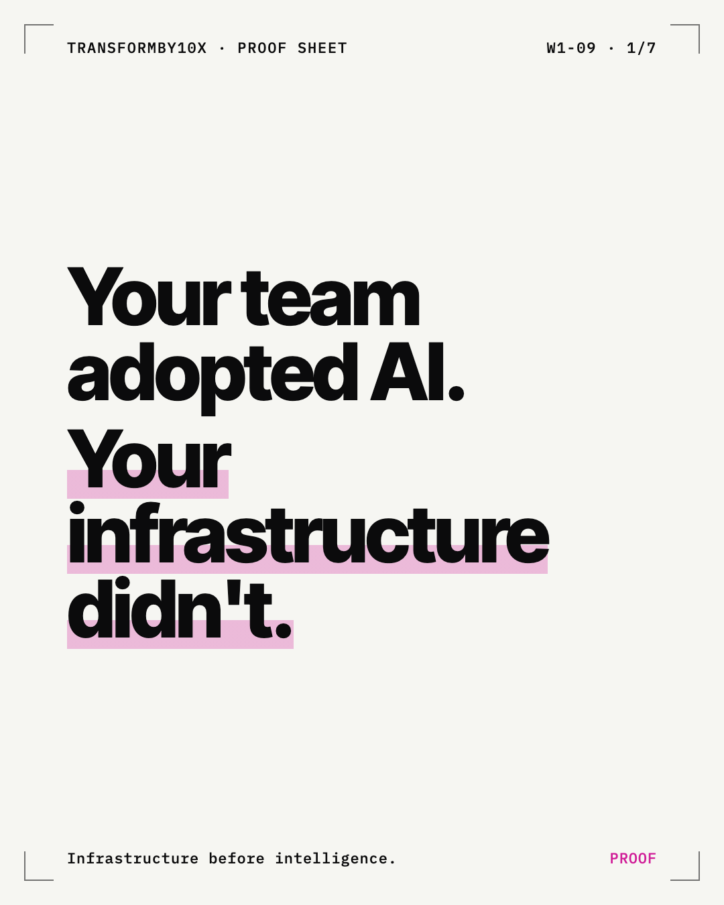
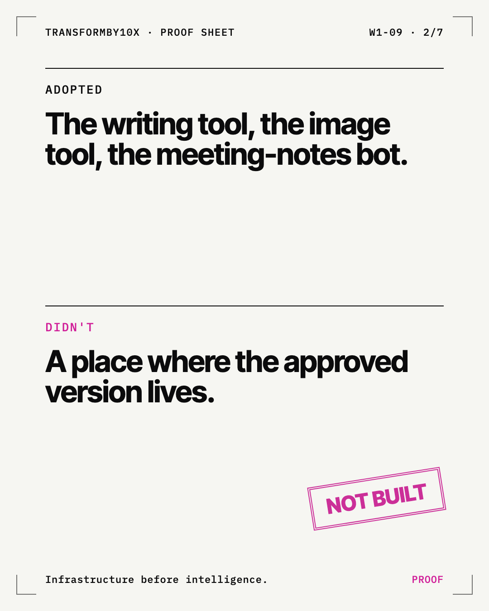
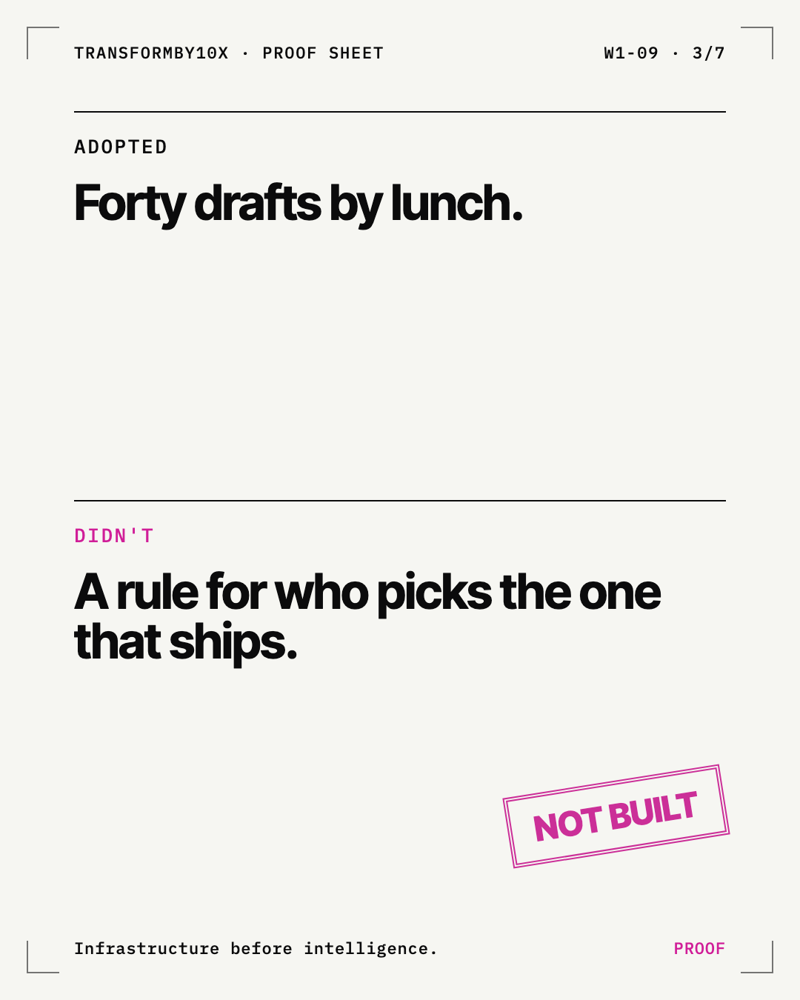
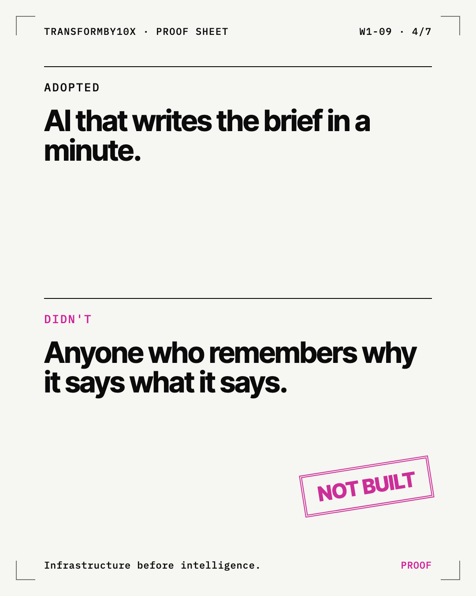
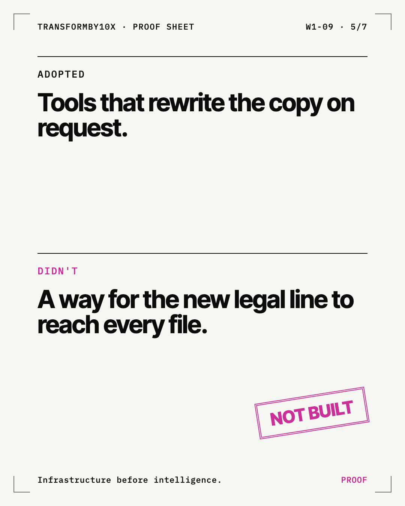
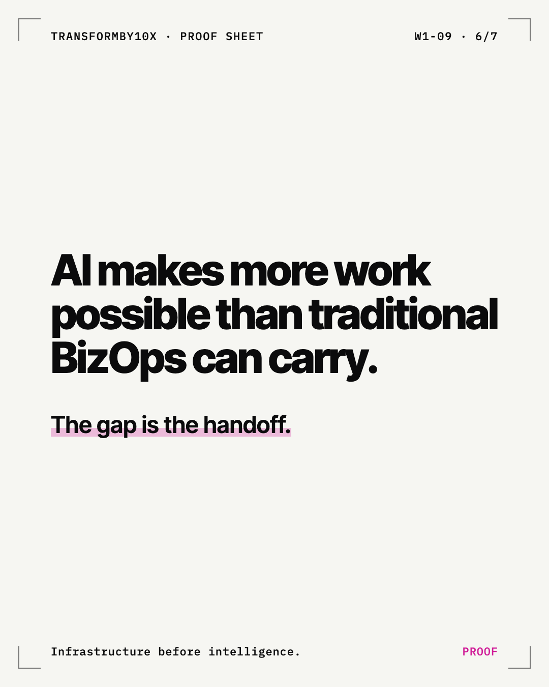
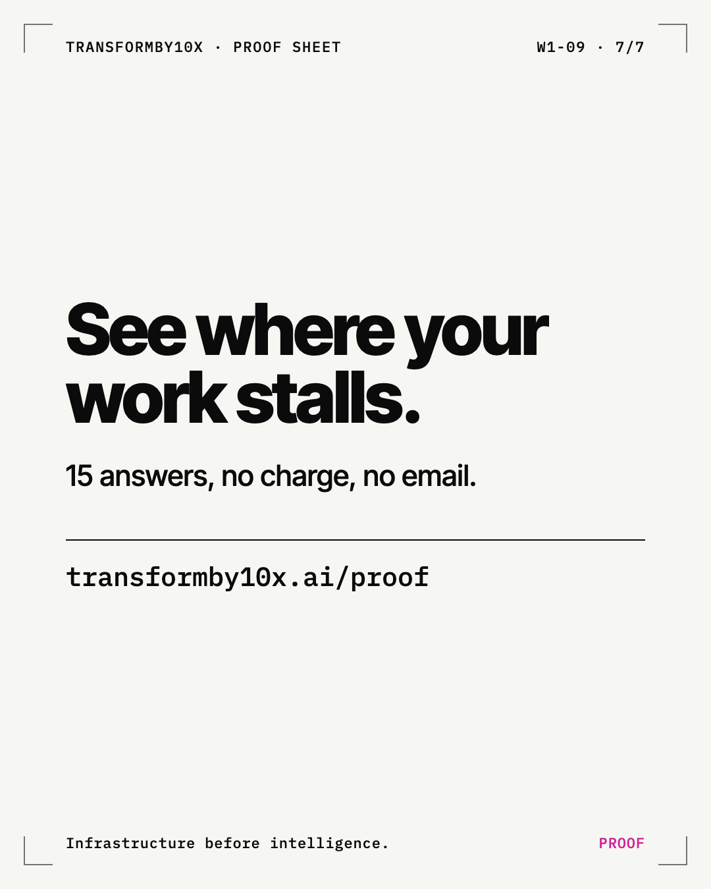

TransformBy10X · content · W1-2026-11-19 · drafts for your approval
AI created a job. Nobody applied.
AI created a job. Nobody applied. The Context Carrier: the unlisted, unpaid job of remembering which version is approved, carrying every change into every file and re-explaining the brief to every new tool. It's already on your team. That's what adopting AI without the infrastructure looks like.
Supporting piece: Adopted / Didn't, a carousel that lays the thesis out tool by tool.
What this week tests
- T1 x-link: link in the X post (W1-07) vs in the first reply (W1-02, W1-12).
- T2 ig-format: 8-second Reel (W1-04) vs carousel (W1-10).
- T3 idea: the job-posting idea (W1-01, W1-02) vs a plain scene hook (W1-07, W1-12).
Thanksgiving is Thu 26 Nov in the US, so the week ends Wed 25.
13 posts across 7 channels
X2026-11-19 · 08:30
E
Erik H Bush@ErikHBush
Twenty years on agency floors and I never saw a job description for the hardest job there.
Remember which version the client approved. Carry the legal change into every file. Re-explain the brief.
AI tripled that job overnight. Nobody applied.
First reply15 answers show where it's landing on your team. https://transformby10x.ai/proof?s=W1-01
hook H-08 is new and needs Erik's yes
X2026-11-19 · 13:00
T
TransformBy10X@transformby10x
AI created a job. Nobody applied.
Context Carrier: knows which version is approved, carries every change into every file, re-explains the brief to every new tool.
It's already on your team. Unpaid.

First replySee where your work stalls. 15 answers, no charge, no email. https://transformby10x.ai/proof?s=W1-02
hook H-08 is new and needs Erik's yes
LinkedIn2026-11-19 · 09:00
E
Erik Howerbushpersonal profile
AI created a job. Nobody applied.
I ran agency operations for twenty years. The hardest job on every floor never had a title.
Somebody had to remember which version the client approved.
Somebody had to carry the new legal line into every file that already existed.
Somebody had to re-explain the brief to every person who joined late.
It used to be a few hours a week, spread across an account team.
Then every team adopted AI. Drafts went from three to thirty. Versions went from a week apart to an afternoon apart. Every new tool needed the brief explained again.
The job tripled. Nobody was hired for it. It landed on whoever cared most, usually the person you can least afford to burn out.
That's the part I keep coming back to. Your team adopted AI. Your infrastructure didn't. The folders, the decision record, the rule for how a change travels: none of it was built for work that moves this fast.
The fix isn't another tool. It's giving that job a home in the structure, so it stops living in one tired person's head.
Link in the first comment.
First commentI built a 15-answer check that shows where this job is landing on your team: https://transformby10x.ai/proof?s=W1-03
hook H-08 is new and needs Erik's yes
Instagram2026-11-20 · 12:00
E
Erik H Bushfeed
AI created a job. Nobody applied.
Context Carrier. Remembers which version is approved. Carries every change into every file. Re-explains the brief to every new tool.
It's already on your team.
Your team adopted AI. Your infrastructure didn't. See where your work stalls: 15 answers, link in bio.
hook H-08 is new and needs Erik's yes
YouTube Shorts2026-11-20 · 12:00
E
Erik H Bushchannel
AI created a job. Nobody applied. #Shorts
See where your work stalls, 15 answers: https://transformby10x.ai/proof?s=W1-05
The Context Carrier is the unlisted job of remembering which version is approved, carrying every change into every file and re-explaining the brief to every new tool. Your team adopted AI. Your infrastructure didn't.
hook H-08 is new and needs Erik's yes
Facebook2026-11-20 · 12:30
T
TransformBy10Xpage
AI created a job. Nobody applied.
It's already on your team. See where your work stalls in 15 answers: https://transformby10x.ai/proof?s=W1-06
hook H-08 is new and needs Erik's yes
X2026-11-23 · 13:00
T
TransformBy10X@transformby10x
The editor's marking up v2. The client approved v3.
Nobody dropped the ball. The approval moved faster than the handoff.
See where your work stalls. 15 answers, no charge.
https://transformby10x.ai/proof?s=W1-07
X link in the post body. channels.md says first reply; put it under 'reply:' unless this is the A/B test
X2026-11-23 · 08:30
E
Erik H Bush@ErikHBush
New line on my homepage this week:
Your team adopted AI. Your infrastructure didn't.
Every company I talk to bought the tools. Almost none rebuilt the folders, the sign-offs or the way a change travels. So the work got faster and the handoffs didn't.
First replyWhere it shows up first, in 15 answers: https://transformby10x.ai/proof?s=W1-08
Passes every house rule
LinkedIn2026-11-24 · 10:00
T
TransformBy10Xcompany page
Your team adopted AI. Your infrastructure didn't.
Five things almost every team adopted this year, and the piece of structure each one needed that nobody built.
See where your work stalls in 15 answers: https://transformby10x.ai/proof?s=W1-09







Passes every house rule
Instagram2026-11-24 · 12:00
E
Erik H Bushfeed
Your team adopted AI. Your infrastructure didn't.
Swipe for the five things nearly every team adopted this year, and what each one needed that nobody built.
Infrastructure before intelligence. See where your work stalls: 15 answers, link in bio.
Passes every house rule
LinkedIn2026-11-24 · 09:00
E
Erik Howerbushpersonal profile
Client legal lines changed. Templates didn't.
A client updates their offer terms on a Monday. Account sends the new line round. Everyone says got it.
By Thursday the old line has shipped in six more files.
Nobody was careless. Here's what changed: three years ago those six files took a week to make, and the new line had time to reach the people making them. Now AI makes them in an afternoon, from templates and old drafts that still carry the old line.
The change was approved once. Then it had to be remembered in every file after that, by hand, at AI speed.
That isn't a people problem. It's a missing piece of infrastructure: one place the current legal line lives, and a rule that every new file reads from it.
Your team adopted AI. Your infrastructure didn't.
Link in the first comment.
First commentThe 15-answer check I built for exactly this: https://transformby10x.ai/proof?s=W1-11
Passes every house rule
X2026-11-25 · 13:00
T
TransformBy10X@transformby10x
Every AI tool you bought makes more versions.
None of them knows which one is approved.
Is your workflow built for AI speed?
First replySee PROOF. 15 answers, no charge, no email. https://transformby10x.ai/proof?s=W1-12
hook H-09 is new and needs Erik's yes
X2026-11-25 · 08:30
E
Erik H Bush@ErikHBush
The shops that worry me aren't the big ones.
It's the three-person outfit that set up its folders, sign-offs and handoffs for AI on day one. They never had to unlearn anything, so they quote your client in a third of the time.
First replySee where yours stalls: https://transformby10x.ai/proof?s=W1-13
Passes every house rule
Your call
Approve all, approve by number (for example "approve W1-01 to W1-08"), or give notes on any post. Approved posts go to Postiz as drafts. You press schedule. Nothing posts on its own.